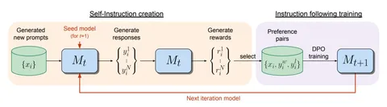

В сегодняшней статье — концепция Self-Rewarding Language Models. Они не только генерируют ответы, но и оценивают их качество в процессе обучения.
Традиционные подходы к обучению, такие как обучение с подкреплением на основе обратной связи от людей (RLHF), ограничены качеством и объемом человеческих данных. Авторы статьи предлагают модель, которая сама создает инструкции, генерирует ответы и оценивает их качество, используя технику LLM-as-a-Judge.
Обучение проводится через итерации, каждая из которых состоит из следующих этапов:
1. Генерация ответов на основе текущего датасета. На первой итерации — созданного человеком.
2. Оценка ответов — модель сама оценивает качество ответов по определённым критериям, таким как релевантность, полезность, чёткость и уровень экспертизы.
3. Создание самоинструкций для следующего шага — модель создает новые инструкции на основе исходного набора данных.
4. Следующая итерация — дообученные модели используются для последующих итераций обучения. Это ведёт к улучшению качества как генерации ответов, так и их оценки.
В экспериментах использовали Llama 2-70B, обученную на датасете Open Assistant. Модель прошла через три итерации обучения с самосозданными данными.
— Первичная модель, файнтюненная на IFT (Instruction Fine-Tuning) и EFT (Evaluation Fine-Tuning)-данных с помощью SFT, показала результаты, сопоставимые с базовой моделью.
— Вторая итерация, обученная на AIFT (AI Feedback Training) c помощью DPO, выдавала лучший ответ в 55,5% случаев, а в 32,8% — того же качества.
— Третья итерация в 47,7% случаев выдавала лучший ответ, а в 39,8% — того же качества.
Модель, прошедшая три итерации обучения, продемонстрировала улучшения в тестах AlpacaEval 2.0, превзойдя модели Claude 2, Gemini Pro и GPT-4 0613. Модель третьей итерации показала 20,44% выигрышей в тестах, что значительно выше предыдущих итераций (9,94% для первой и 15,38% для второй).
Разбор подготовил
Душный NLP
